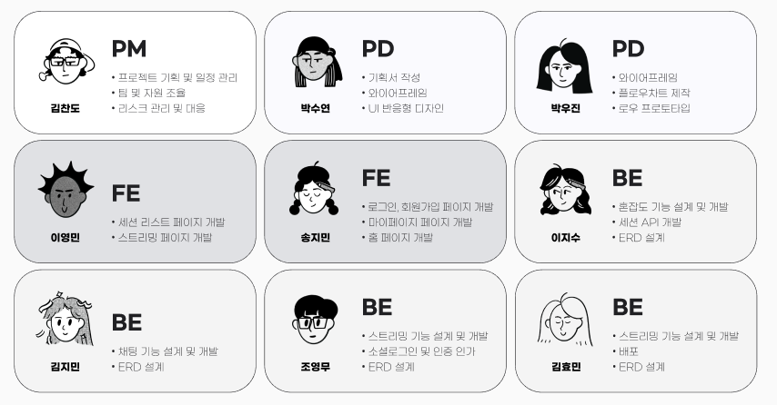
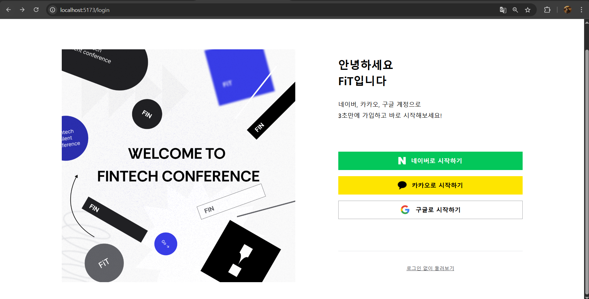
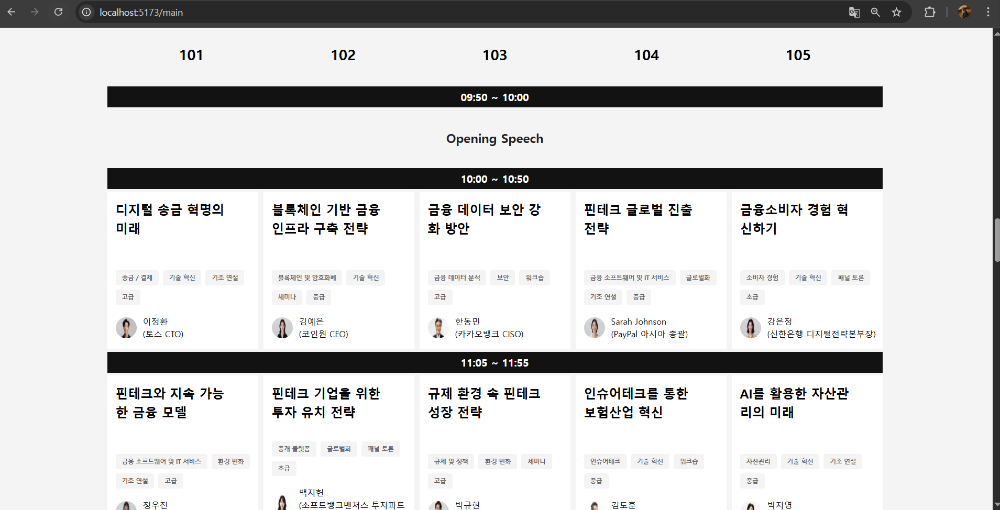
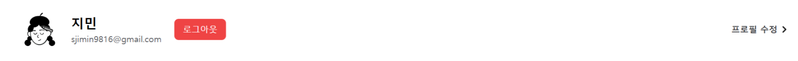
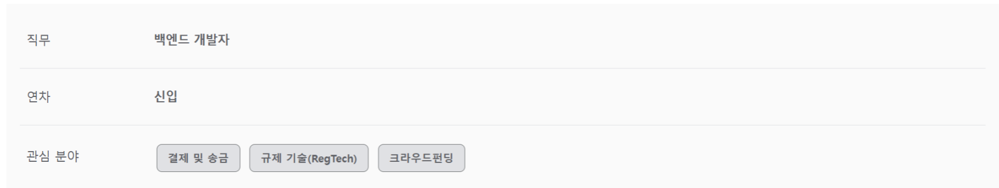
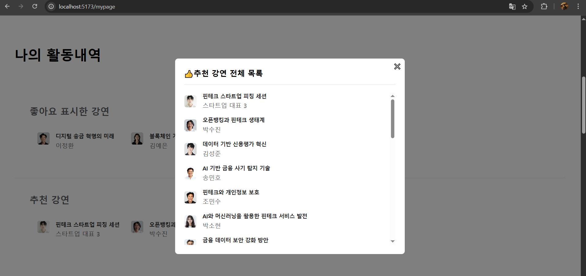
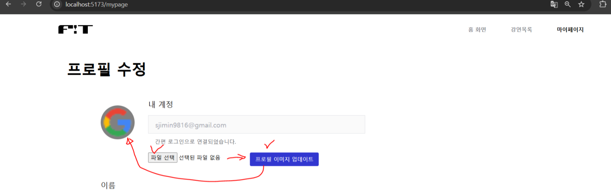
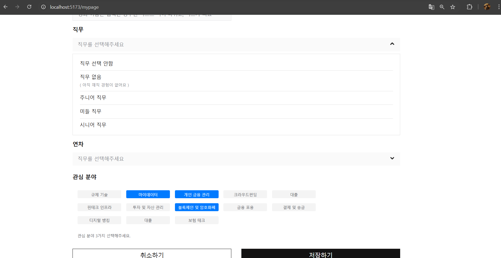

×
🔊대규모 핀테크 사일런트 컨퍼런스🎧
카카오 X 구름 Deep Dive 온라인 부트캠프
리액트 기반 프론트엔드 개발자 취업 특화 과정 1회차
☁️기간 : 2024년 8월 19일 ➡ 2025월 4월 2일
사일런트 컴퍼런스란❓
기존 스피커 시스템 대신 무선 헤드셋을 활용하여
한 공간에 서 여러 개의 세션을 동시에 진행할 수 있는 혁신적인 포럼 방식❗
👉 스피커의 강연을 오디오만 듣고 싶다면 오디오 정취로,
영상이랑 오디오를 같이 듣고 싶다면 라이브 영상 시청으로
👥인원 총 9명
: 프로덕트 매니지먼트[PM] 1명, 프로덕트 디자이너[PD] 2명,
프론트엔드[FE] 2명, 백엔드[BE] 4명
📅 2025년 2월 26일 ➡ 4월 1일
🛠️사용스택
PD
FE
- Core : React - js
- Ui : tailwindCss
- State Managing : redux
- Bundler : React - Vite
BE
- SpringBoot
- Spring Security
- Docker
- OAuth2
- JPA
- MySQL
- Redis
- Swagger
- AWS
- WebSocket
- Redis Pub/Sub
- Kurento
4개의 직무 팀원 역할 분담

실행영상
🤓내가 맡은 기능 정리
🔥네이버, 카카오, 구글 소셜 로그인 및 회원가입

- OAuth2 소셜 로그인 ( 네이버, 카카오, 구글 )
- 각 플랫폼의 인증 API를 활용해 로그인 버튼 생성
- 사용자가 클릭 시 해당 플랫폼의 로그인 페이지로 리디렉션
- 백엔드와 토큰 교환 🛡️
- 로그인 후 리디렉션되는 URL에서 Authorization Code로 백엔드와 Access Token 교환
- fetch 이용해 백엔드 API 호출( 토큰 교환 및 사용자 정보 가져오기 )
- 사용자 상태 관리 🗂️
- Redux를 사용하여 로그인 성공 시 사용자 정보와 Access Token을 상태로 저장
- localStorage를 활용해 Access Token을 브라우저에 저장
💠소셜 로그인 버튼 ( GoogleLoginButton )
const GoogleLogin = () => {
const onGoogleLogin = () => {
window.location.href = "https://fit-conference.shop/oauth2/authorization/google";
};
return (
<button onClick={onGoogleLogin} className="social-btn">
<img src="/images/GoogleLogo.png" alt="Google" />
구글로 시작하기
</button>
);
};
💠토큰 교환 로직
useEffect(() => {
const exchangeToken = async () => {
try {
const response = await fetch("https://fit-conference.shop/api/v1/auth/token-exchange", {
method: "POST",
headers: { "Content-Type": "application/json" },
credentials: "include",
});
if (response.ok) {
let token = response.headers.get("Authorization");
if (token?.startsWith("Bearer ")) token = token.substring(7);
localStorage.setItem("access-token", token);
const userInfo = await axios.get("https://fit-conference.shop/api/v1/users/account", {
headers: { Authorization: `Bearer ${token}` },
});
dispatch(loginSuccess({ user: userInfo.data.response, token }));
navigate("/mypage");
}
} catch (error) {
console.error("Token exchange failed:", error);
}
};
exchangeToken();
}, []);
🔥메인페이지 연사 정보 불러오기

- API 연동
- /api/v1/speaker 호출하여 세션 데이터를 요청하고 처리
- 데이터 정렬 및 렌더링
- 세션 데이터를 시간순으로 정렬한 후 UI에 표시
- 각 세션별 정보( 타이틀, 태그, 연사 이미지 및 이름 등 ) 출력
💠API 요청 및 데이터 정렬
useEffect(() => {
const fetchData = async () => {
try {
const response = await axios.get('/api/v1/speaker');
if (response.data.success) {
const sortedSessions = response.data.response.sort((a, b) =>
a.startTime.localeCompare(b.startTime)
);
setSessions(sortedSessions);
} else {
console.error('API 요청 실패:', response.data.message);
}
} catch (error) {
console.error('API 요청 중 오류 발생:', error);
}
};
fetchData();
}, []);
💠세션 데이터 렌더링
{sessions.map((session, index) => (
<div key={index} className="session-card">
<h3>{session.title}</h3>
<div className="tags">
{session.tags.map((tag, i) => (
<span key={i} className="tag">{tag}</span>
))}
</div>
<div className="speaker-info">
<img src={session.speaker.image} alt="연사 이미지" />
<p>{session.speaker.name} ({session.speaker.description})</p>
</div>
</div>
))}
✅ 세션 카드 출력: 타이틀, 태그, 연사 이미지, 연사 이름 및 설명 출력
🔥마이페이지 로그인(구글/네이버/카카오)한 유저의 프로필, 이름, 이메일 정보 불러오기

-
로그인한 유저 정보 불러오기
-
플랫폼별 로그인 (카카오, 네이버, 구글) 완료 후
/api/v1/users/account API를 호출하여 유저의 이름, 이메일, 프로필 이미지를 화면에 표시
const fetchUserProfile = async () => {
try {
const accessToken = localStorage.getItem("access-token");
if (!accessToken) return navigate('/login');
const response = await axios.get("https://fit-conference.shop/api/v1/users/account", {
headers: { Authorization: `Bearer ${accessToken}` },
});
if (response.data.success) {
dispatch(loginSuccess({
user: response.data.response,
token: accessToken
}));
} else {
localStorage.removeItem("access-token");
dispatch(logout());
navigate("/login");
}
} catch (error) {
console.error("API Error:", error);
navigate("/login");
}
};
- 로그아웃
-
Access Token 삭제 :
localStorage에서 저장된 access-token을 제거하여
사용자 인증 정보를 초기화
-
Redex 상태 관리 :
dispatch(logout()) 호출하여 Redux 스토어에서 사용자 상태를 초기화
-
페이지 이동 :
로그아웃 후 navigate("/login")을 통해 로그인 페이지로 이동 처리
const handleLogout = () => {
localStorage.removeItem("access-token");
dispatch(logout());
navigate("/login");
};
{user && (
<button
onClick={handleLogout}
className="bg-red-500 text-white px-4 py-2 rounded-lg hover:bg-red-600 transition whitespace-nowrap"
>
로그아웃
</button>
)}
🔥직무, 연차, 관심 분야(3개 태그 선택)를 Redux 활용하여 상태 관리 및 데이터 가져오기

직무와 연차 데이터
-
사용자가 프로필 수정 시 선택한 직무와 연차 데이터를 리덕스 상태로 관리
-
useSelector 사용하여 리덕스 스토어에서 해당 데이터를 가져와 화면에 반영
관심 분야( 태그 3개 선택 )
-
프로필 수정 화면에서 사용자가 태그 3개 선택하도록 구현
-
선택된 태그를 리덕스 상태에 저장한 뒤 화면에 동적으로 반영
const initialState = {
job: null,
experience: null,
interests: [],
};
const authSlice = createSlice({
name: 'auth',
initialState: initialState,
reducers: {
updateProfile(state, action) {
state.name = action.payload.name;
state.job = action.payload.job;
state.experience = action.payload.experience;
state.interests = action.payload.interests;
},
},
});
export const {
updateProfile,
} = authSlice.actions;
export default authSlice.reducer;
const name = useSelector((state) => state.auth.name);
const job = useSelector((state) => state.auth.job);
const experience = useSelector((state) => state.auth.experience);
const interests = useSelector((state) => state.auth.interests);
<div>
<span>직무</span>
<span>{job || '직무 없음'}</span>
</div>
<div>
<span>연차</span>
<span>{experience || '연차 없음'}</span>
</div>
<div>관심 분야</div>
<div>
{interests && interests.length > 0 ? (
interests.map((interest, index) => (
<div key={index}>
{interest}
</div>
))
) : (
<div>관심 분야 없음</div>
)}
</div>
🔥좋아요 & 추천 강연 데이터 가져오기

❤️좋아요 표시된 강연
-
/api/v1/users/sessions/like API 호출 :
API를 통해 사용자가 좋아요 누른 강연 정보 가져옴
-
강연자 이미지, 이름, 제목 화면에 표시
최대 3개만 보여주기 :
-
화면에선 좋아요한 강연 중 최대 3개만 보여줌
-
클릭 시 전체 목록 표시하는 모달창이 뜨도록 구현
👍추천 강연
-
/api/v1/session/recommended API 호출 :
API 호출하여 추천 강연 정보를 가져옴
const fetchLikedSessions = async () => {
const accessToken = localStorage.getItem('access-token');
if (!accessToken) return navigate('/login');
try {
const response = await axios.get('/api/v1/users/sessions/like', {
headers: { Authorization: `Bearer ${accessToken}` },
});
if (response.data.success) {
setLikedSessions(response.data.response.slice(0, 3));
}
} catch (error) {
console.error('API Error:', error);
}
};
const fetchRecommendedSessions = async () => {
const accessToken = localStorage.getItem('access-token');
if (!accessToken) return navigate('/login');
try {
const response = await axios.get('/api/v1/session/recommended', {
headers: { Authorization: `Bearer ${accessToken}` },
});
if (response.data.success) {
setSessions(response.data.response.slice(0, 3));
}
} catch (error) {
console.error('API Error:', error);
}
};
const [showModal, setShowModal] = useState(false);
const openModal = () => setShowModal(true);
const closeModal = () => setShowModal(false);
const Modal = ({ children, onClose }) => (
<div>
<button onClick={onClose}>
닫기
</button>
{children}
</div>
);
🔥나의 시간표 세션 데이터 가져오기
-
/api/v1/users/sessions API 호출 :
강연의 제목, 강연자 이름, 연사 이미지 가져옴
세션 강조 표시 :
-
강연 페이지에서 사용자가 + 담기 버튼 클릭한 세션은 진하게 표시되게 구현
-
그렇지 않은 세션은 연하게 표시하여 시각적 차이를 제공
const fetchMySchedule = async () => {
const accessToken = localStorage.getItem("access-token");
if (!accessToken) return navigate("/login");
try {
const response = await axios.get('/api/v1/users/sessions', {
headers: { Authorization: `Bearer ${accessToken}` },
});
if (response.data.success) {
const sortedSessions = response.data.response.sort((a, b) =>
a.startTime.localeCompare(b.startTime)
);
setMyScheduleSessions(sortedSessions);
}
} catch (error) {
console.error("API Error:", error);
}
};
<div className="session-list">
{myScheduleSessions.map((session, index) => (
<div
key={index}
className=`session-item ${
session.isAdded ? 'font-bold text-black' : 'text-gray-400'
}`
>
<img src={session.speakerImage} alt={session.speakerName} className="w-10 h-10 rounded-full" />
<div>{session.title}</div>
<div>{session.speakerName}</div>
</div>
))}
</div>
🔥프로필 이미지 업데이트

이미지 선택 및 미리보기 :
- 사용자가 파일 입력 필드에서 이미지 선택하여 업데이트 가능
- 상태(selectedFile)에 선택된 파일을 저장
/api/v1/users/profile/image API 호출 :
- 선택된 이미지를 FormData로 변환하여 API로 전송
- 성공적으로 업로드된 이미지는 사용자의 마이페이지 프로필에 반영
const handleFileChange = (event) => {
setSelectedFile(event.target.files[0]);
};
const handleImageUpload = async () => {
if (!selectedFile) {
alert('파일을 선택해주세요.');
return;
}
const formData = new FormData();
formData.append('requestImage', selectedFile);
try {
const accessToken = localStorage.getItem('access-token');
const response = await axios.put(
'https://fit-conference.shop/api/v1/users/profile/image',
formData,
{
headers: {
Authorization: `Bearer ${accessToken}`,
'Content-Type': 'multipart/form-data',
},
}
);
if (response.data.success) {
alert('프로필 이미지가 성공적으로 업데이트되었습니다.');
fetchUserAccount();
} else {
alert('프로필 이미지 업데이트에 실패했습니다.');
}
} catch (error) {
console.error('이미지 업로드 실패', error);
alert('이미지 업로드 중 오류가 발생했습니다.');
}
};
🔥이름|직무|연차|관심분야

사용자 정보 수정 :
- 이름 - 입력 필드를 통해 사용자가 직접 수정 가능
- 직무와 연차 - 드롭다운 형태로 선택 가능
- 관심 분야 - 태그 최대 3개까지 선택하도록 구현
프로필 저장 처리 :
- 사용자가 모든 수정 사항을 완료한 뒤 저장하기 버튼을 눌러 /api/v1/users/profile API 호출
- 서버에 업데이트된 데이터를 저장하고 화면에 반영
🖋️상태 관리
const [lastName, setLastName] = useState('');
const [selectedValue, setSelectedValue] = useState('');
const [selectedValue2, setSelectedValue2] = useState('');
const [selectedTags, setSelectedTags] = useState([]);
🖋️API 호출
const handleSave = async () => {
const profileData = {
name: lastName,
job: selectedValue,
years: selectedValue2,
interests: selectedTags,
};
try {
const accessToken = localStorage.getItem('access-token');
const response = await axios.put(
'https://fit-conference.shop/api/v1/users/profile',
profileData,
{
headers: { Authorization: `Bearer ${accessToken}` },
}
);
if (response.data.success) {
dispatch(updateProfile({
name: lastName,
job: selectedValue,
experience: selectedValue2,
interests: selectedTags,
}));
alert('프로필이 성공적으로 업데이트되었습니다.');
} else {
alert('프로필 업데이트에 실패했습니다.');
}
} catch (error) {
console.error('프로필 업데이트 실패', error);
alert('프로필 업데이트 중 오류가 발생했습니다.');
}
};
🖋️마이페이지 반영
<div>
<div className="text-black text-2xl font-bold">
{name || '이름 없음'}
</div>
<div className="text-[#606166] text-lg">
{job || '직무 없음'}
</div>
<div className="text-[#606166] text-lg">
{experience || '연차 없음'}
</div>
<div className="flex flex-wrap gap-2">
{interests.map((interest, index) => (
<span key={index} className="tag">
{interest}
</span>
))}
</div>
</div>
- 이름 수정
- 입력 필드에 사용자 이름 입력
- 수정된 이름이 lastName 상태로 저장
- 직무 및 연차 선택
- 드롭다운 형태로 구성된 직무와 연차 목록에서 사용자가 선택
- 선택된 값은 각각 selectedValue와 selectedValue2 상태로 저장
- 관심 분야(태그)
- 관심 분야 태그 중 최대 3개를 선택 가능
- 선택된 태그는 selectedTags 상태에 저장
- 저장하기 버튼 클릭
- 사용자 입력 데이터를 하나의 객체로 구성하여 서버 API에 전달
- 성공적으로 저장되면 리덕스 상태 및 UI를 업데이트하여 반영
🐱 깃허브
👉
https://github.com/orgs/FiT-8-plus-1-BiT/repositories
총 8팀 중 3등했습니다.